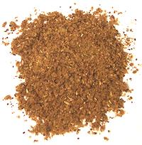

 |
Curry Powder - West AfricaWest Africa - | ||||
| Makes: Effort: Sched: DoAhead: |
3-3/4 oz ** 20 min Yes |
West Africa learned Curry Powder from British who had served in India, so theirs tend to resemble Anglo-Indian Madras powders. This simple recipe avoids items hard to find in North America. The recipe will nearly fill a 4 ounce spice jar. | |||
|
1 3 2 1 1 1/2 6 2 |
T T T t t t t |
Cumin seed Coriander seed Black Pepper Cinnamon Cloves, whole Cardamon seed Chili dry (1) Turmeric |
Make - (20 min)
|